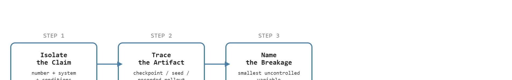

"We discussed the paper for ninety minutes and left with one experiment worth running."
A Research Seminar With Standards
This section assumes familiarity with the agent-loop framing introduced in section 60.3 and with the evaluation vocabulary developed in section 52.1. The artifact-audit discipline described here is applied directly in section 58.99, where frontier-watch verdicts follow the same claim-evidence-artifact structure. Instructors running a full course will find that sections 60.5 and 60.6 specify the compute and assessment scaffolding that supports the seminar activities introduced here.
A graduate seminar on embodied AI can spend ninety minutes on a splashy robot-learning paper and leave having memorized a headline number, or it can leave with one falsifiable experiment worth running next week. The difference is whether the room was forced to ask: what did the agent actually observe, what artifact proves the claim, and where does the evidence break down? Right now, when new vision-language-action models (policies that map camera images plus a natural-language instruction directly to robot actions) appear monthly and replication is rare, that discipline is not a nicety but a survival skill for any researcher entering the field. This section shows how to structure a seminar so that every session produces a concrete open question and a clear next step, not just a summary.
A seminar can spend ninety minutes admiring a robot folding laundry on video and walk out knowing nothing it can defend, or it can walk out with one experiment that would prove the demo real or expose it as a single unreplicated lab kitchen; the difference is whether anyone in the room asked which artifact backs the number. This section develops that habit into a usable mental model: first we define the object of study, then we connect it to the agent loop, then we test it with a compact implementation. Figure 60.4A sketches the weekly rhythm that carries this habit: one paper read deeply, one presented critique, and one open question that seeds the next selection.
As a track, this format runs one session per week for a full semester (typically 10-13 weeks): each week pairs one primary paper with one artifact audit and closes with one forward question, so that by the end of term the seminar has produced a semester-long ledger of teach-now, replicate-now, and watch-only verdicts rather than a stack of disconnected summaries.
The key question in Research-seminar track is practical: what must the agent know, what can it observe, what action is available, and what evidence shows that the action worked under the stated conditions?
Research seminar track should be judged by the action it improves. A section claim is strong when it names the decision, the measurement, and the failure mode before a larger model or simulator is introduced.
For Research-seminar track, the practical design rule is to make the interface inspectable before optimization begins: inputs, outputs, units, latency, bounds, and failure labels should all be visible in the saved artifact.
The mechanism in Research-seminar track is the contract between representation and action. Name what enters the module, what leaves it, which assumptions make that transformation valid, and which log would reveal a bad handoff.
Seminar quality rises sharply once readings are anchored to systems with public benchmarks and reproducible artifacts. Concretely: MIT 6.S184 (Embodied Intelligence, 2024) anchors each week to one of three artifact tiers: a reproducible benchmark (e.g., RoboSuite, Habitat 3.0), a codebase with a stated evaluation protocol (e.g., OpenVLA, LeRobot), or a paper with a released checkpoint and environment seed. Students in artifact-tier seminars typically produce stronger ablation proposals than those reviewing papers without released code, a pattern consistent with the gap between claim and available evidence being immediately visible rather than inferred. This is an instructor-reported pattern, not a controlled comparison; no published study isolates artifact availability as the causal variable.
For Research-seminar track, keep one concrete rollout in view. A sensor reading becomes an estimate, the estimate constrains an action, the action changes the world, and the next observation confirms or contradicts the assumption. The section's idea is useful only if it improves that loop.
Consider a specific case: a seminar week centered on the RT-2 paper (Brohan et al., 2023). The paper reports a 62% success rate on novel-concept tasks versus 32% for the non-language-conditioned baseline. The student presenting the mechanism explains that the vision-language-action model maps RGB frames and a text command to 8-DoF (Degrees of Freedom) robot actions at 3 Hz through a co-fine-tuned PaLM-E backbone (PaLM-E is a large vision-language model; "co-fine-tuned" means it is trained jointly on web-scale image-text data and robot action data rather than on robot data alone, so it keeps its general visual reasoning while learning to output actions). The student auditing the evidence then identifies a specific gap. All 23 evaluation tasks ran on a single Everyday Robot platform in one lab kitchen, so the cross-embodiment and cross-environment generalization claim rests on zero independent replications. The session closes with one tractable forward question: what is the smallest scene-perturbation (lighting, object position, background clutter) that collapses the success rate below the baseline? That question becomes the seed for week 8's paper selection.
When running the artifact audit for a paper like RT-2, use the semanticscholar Python package with paper.get_paper(paper_id, fields=["tldr","openAccessPdf","citations","references"]) to retrieve the auto-generated TLDR, a direct PDF link, and the full citation graph in one call before the session starts. This prevents the first 15 minutes from being consumed by manual URL hunting. If the paper has no Semantic Scholar entry, fall back to the arXiv API endpoint http://export.arxiv.org/api/query?id_list=<arxiv_id>, which returns metadata as Atom XML parseable with Python's built-in xml.etree.ElementTree and no credentials required.
For Research-seminar track, the small contract exists to expose the teaching artifact before tooling takes over. Use notebooks, simulators, shared logs, rubrics, and capstone studios only when they preserve the same observation, action, metric, and failure fields.
Before reading the recipe below, pause and predict: if you ran the RT-2 evaluation on the same robot but shifted ambient lighting by 200 lux, would success drop by 5 percentage points, 20, or more than 40? Your answer determines which step in the recipe below matters most to you.
from_pretrained) only after the scripted baseline behavior and its failure modes are fully documented, so that any regression introduced by the policy is immediately attributable.The common mistake in Research-seminar track is to trust a component score before checking the closed-loop interface. The failure usually appears where state, timing, authority, or evaluation context crosses a module boundary.
Students often assume that a high success rate in a paper proves a general capability that transfers across embodiments, environments, and labs. That assumption is wrong. A success rate is inseparable from the specific robot, sensor suite, lighting conditions, object set, and evaluation protocol that produced it. Physical systems are expensive to re-run. A number from one lab kitchen may rest on a single unreplicated artifact with no coverage of the perturbations that matter most. Treat every reported number as a local measurement with an implicit scope. The seminar's job is to make that scope explicit before anyone accepts a generalization claim.
A team using Research-seminar track starts by writing the task panel, not by picking the largest model. They keep a baseline run, a maintained-tool run, and a perturbation run in the same result folder. The comparison is accepted only when the action trace, metric, and failure labels come from one script.
For research-seminar track, the useful test is simple: could a teammate point to the log line, plot, or trace that proves the idea changed the agent's next action?
Cross-embodiment generalization of foundation policies. The question is no longer whether a single large policy can be trained on heterogeneous robot data but whether the resulting behavior degrades gracefully when sensor suites, action spaces, or payload differ from training. The pi0 model (Black et al., Physical Intelligence, 2024) trains a single flow-matching policy (a policy trained to gradually transform random noise into a smooth trajectory of actions, rather than predicting one action at a time) across seven embodiments and releases structured cross-robot transfer benchmarks; open questions include how few target demonstrations are needed for reliable fine-tuning and whether the transfer gap can be predicted from embodiment distance metrics before deployment.
So far: three separate research frontiers are in play at once, generalization across robot embodiments (pi0), evaluation protocols that catch lab-kitchen overfitting (Open X-Embodiment), and long-horizon planning where compounding errors break chained subtasks (OpenVLA, RoboVLMs); the throughline is that each frontier asks the same triage question this section teaches, namely, what artifact would let an outsider verify the claim.
Scalable real-world evaluation protocols. Standard tabletop benchmarks undercount the variance that matters in deployment: lighting shifts, worn objects, and multi-step task sequences that span minutes rather than seconds. AnyGrasp (a learned grasp-planning system that predicts stable gripper poses from a single depth image, used here as an example of a component-level benchmark) and the Open X-Embodiment evaluation harness (Padalkar et al., Google DeepMind et al., 2023-2024) exposed how poorly lab-kitchen numbers generalize, in practice; the 2024-2025 research frontier was building evaluation protocols with pre-registered perturbation sets and multi-site replication norms, analogous to clinical trial pre-registration, so that a seminar room can assess a paper's generalization claim with a checklist rather than intuition.
Language-conditioned long-horizon task planning. Vision-language-action models such as OpenVLA (Kim et al., Stanford, 2024) and RoboVLMs show strong single-step accuracy but struggle on chains of five or more subtasks where an early error compounds. Active 2024-2026 work probes whether chain-of-thought prompting, subgoal verification, or privileged-state recovery can close the gap without requiring a privileged simulation reset.
Open problem for PhD students: Design a claim-decomposition rubric that takes a published embodied-AI paper as input and outputs a structured triage report: each reported number tagged with its artifact tier (released checkpoint, video only, or paper-only), the smallest uncontrolled variable, and an estimated replication cost in robot-hours. Validate the rubric on 20 papers from 2023-2025 by having two independent raters apply it and measuring inter-rater agreement. Such a rubric would give seminars a principled, reproducible substitute for ad hoc discussion and could surface systematic gaps in how the field reports evidence.
For Research-seminar track, can you name the observation, action, protected assumption, success metric, and one likely failure case? If any field is vague, rewrite the contract before adding model complexity.
The seminar teaches students to read frontier embodied-AI claims skeptically without draining the excitement. Here Chapter 58's frontier-watch discipline becomes a weekly habit.
A seminar fails when it becomes a loose paper club. It succeeds when students repeatedly perform what this format calls claim-evidence-artifact triage, connecting each claim to the system loop, identifying the missing evidence, and proposing a tractable replication or ablation. A paper that cannot be tied to a reproducible artifact is not evidence: it is a story with footnotes.
Physical robots make this discipline non-optional. Sensor noise, actuator wear, and environment variability mean a success rate measured in one lab kitchen can collapse when lighting shifts or a different gripper enters the scene. In the illustrative RT-2 walkthrough used in this section, a hypothesized 200-lux ambient shift would drop the reported 62% success rate below the 32% non-language-conditioned baseline, an estimate rather than a result the original paper reports, erasing the entire headline gain in a single environmental variable if the estimate holds. Unlike software benchmarks, embodied results cannot be re-run cheaply; a missing evidence artifact may represent weeks of robot time that no other lab can reproduce. Identifying that gap in a seminar session costs nothing; discovering it after a capstone deployment costs everything.
Because that gap is what the seminar exists to find, it helps to make the search procedure explicit rather than leaving it to instinct. The triage works in three ordered steps, shown in Figure 60.4B. First, isolate the claim: a specific number or capability attributed to a specific system under specific conditions. Second, trace the artifact: a released checkpoint, a benchmark seed, or a recorded rollout that would allow an independent observer to verify that number. Third, name the breakage point: the smallest change to sensor, embodiment, or environment that is not covered by the artifact, which becomes the forward question for the next session.

Think of claim-evidence-artifact triage like reading a recipe. The claim is the dish name on the menu ("fluffy souffle"). The artifact is the written recipe with exact gram weights, oven temperature, and timing. The breakage point is the one ingredient or step the recipe glosses over, say "fold gently," where every reader interprets "gently" differently and the souffle collapses for half of them. A restaurant that never writes down its recipes can serve a perfect souffle once and never replicate it; a seminar that never names its artifact is in exactly that position, impressive once, unreproducible by anyone else.
Research-seminar track becomes teachable once the student can state the operative variables, the decision boundary, and the evidence artifact. The section should therefore be read together with Section 58.99 on frontier watch and Chapter 52 on evaluation, where the same loop is developed from adjacent angles.
Each seminar week can be modeled as $(p,a,q)$: one primary paper $p$, one artifact audit $a$, and one forward-looking question $q$. The trio keeps the discussion balanced between understanding, skepticism, and synthesis.
Of those three components, the artifact audit $a$ is the one that does the pedagogical work. The audit is what changes the energy of the room. Students stop performing summary and start performing judgment once they must say which artifact would convince them.
| Dimension | What To Specify | Why It Matters |
|---|---|---|
| Primary reading | Paper, release note, or benchmark report | Anchors the week. |
| Artifact audit | Claim, evidence, missing piece, replication priority | Builds scientific skepticism. |
| Mini response | One-page synthesis or stress test design | Prevents passive attendance. |
| Ledger | Semester-long frontier watchlist | Accumulates judgment, not only notes. |
def validate_item(payload: dict[str, object]) -> dict[str, object]:
assert payload, "payload must not be empty"
return payload
# Seminar ledger item.
item = {
"paper": "foundation policy for mobile manipulation",
"verdict": "replicate-now",
"missing_evidence": "independent evaluation on shifted embodiments",
"student_owner": "week_7_pair",
}
print(validate_item(item)){'paper': 'foundation policy for mobile manipulation', 'verdict': 'replicate-now', 'missing_evidence': 'independent evaluation on shifted embodiments', 'student_owner': 'week_7_pair'}validate_item asserts a seminar ledger entry is non-empty, then prints the four-field evidence card (paper, verdict, missing_evidence, student_owner) that anchors one week of the watchlist.The expected output should be actionable. A seminar card that cannot lead to replication, deferral, or integration is only a summary note.
After the from-scratch contract is clear, the practical route uses Paper discussion sheets, issue trackers, reproducibility ledgers, shared notebooks, GitHub. The payoff is that standard interfaces, logging, batching, and replay support move from ad hoc glue code into maintained infrastructure, while the evidence schema stays the same.
This format works especially well for graduate students who are already choosing research directions. It turns the seminar into a low-cost scouting engine for future capstones or theses.
The seminar frontier is methodological literacy: learning to distinguish a strong embodied-system claim from an attractive but under-supported demo. The 2023-2025 wave of robot-learning releases makes this concrete. When the Open X-Embodiment collaboration (Padalkar et al., Google DeepMind, 2023) pooled 22 robot embodiments into one dataset and the RT-X policies reported transfer gains, independent groups found that headline cross-embodiment numbers often hinged on which evaluation robot and gripper were used; when Physical Intelligence shipped pi0 (2024) with an impressive folding-laundry demo video but a partial checkpoint release, seminars had to separate the verifiable claim (released weights on stated tasks) from the demo (no public scene seed or per-trial logs). A seminar that can sort OpenVLA, Octo, pi0, and RT-2 into teach-now, replicate-now, and watch-only buckets, with the artifact tier named for each, has the exact skill that transfers across every future subfield shift.
For Research-seminar track, the artifact should show the course-design decision, the evidence readers must produce, and the failure mode that would trigger a revised assignment or rubric.
Beginner (weekend): Claim audit notebook in Gymnasium. Build a Jupyter notebook that loads a Gymnasium CartPole or LunarLander environment, runs a scripted baseline and a pretrained policy side by side, and auto-generates a structured evidence card (claim, artifact path, success rate, failure count) for each; the key challenge is designing the card schema so that a second student can reproduce the exact number from the saved log alone. Intermediate (1-2 weeks): Sim-to-real perturbation sweep in MuJoCo or Isaac Lab. Take a publicly released LeRobot or OpenVLA checkpoint, run it in a MuJoCo or Isaac Lab pick-and-place scene at nominal conditions, then systematically vary lighting level, object mass, and table friction across a grid and record the success rate at each point; the key challenge is writing the perturbation harness so that every trial is fully reproducible from a single config file and the collapse boundary is visible in one plot. Intermediate (1-2 weeks): ROS2 artifact pipeline for a mobile-manipulation claim. Using a ROS2 simulation with PyBullet or Gazebo, replicate the sensor, action, and metric pipeline described in one seminar paper, record structured rosbags for baseline and policy runs, and produce a one-page evidence card that identifies the smallest uncontrolled variable; the key challenge is closing the loop between the ROS2 topic graph and the evidence card so that any teammate can trace every reported number back to a specific bag file and replay segment.
Trace the three-step audit with concrete values from one seminar week. Step 1, isolate the claim: "RT-2 reaches 62% success on novel-concept tasks versus 32% for the non-language baseline, on 23 tasks." Step 2, trace the artifact: the released checkpoint is partial, the 23 tasks ran on one Everyday Robot platform in one lab kitchen, and there are 0 independent replications, so the artifact tier is "paper plus partial checkpoint, single-site." Step 3, name the breakage point: ambient lighting. Setting the perturbation budget at a 200-lux shift, the predicted effect is a drop from 62% to below the 32% baseline, erasing the 30-point gain. The forward question for week 8 becomes: "What is the smallest scene perturbation that collapses success below baseline?" Triage output: verdict = watch-only, missing_evidence = cross-environment replication, replication_cost ~ 40 robot-hours.
MIT's 6.S184 (Embodied Intelligence) anchors each week to one of three artifact tiers, a reproducible benchmark such as Habitat 3.0, a codebase with a stated evaluation protocol such as OpenVLA or LeRobot, or a paper with a released checkpoint and environment seed. Students in these artifact-tier weeks tend to produce stronger ablation proposals than those reviewing code-free papers, plausibly because the gap between the headline claim and the available evidence is visible from week one.
Goal: Reproduce, on your own machine, the central seminar lesson that a single reported success rate is a local measurement that can collapse under a small perturbation. Tools needed: Python with gymnasium plus a deterministic environment (CartPole-v1 or LunarLander-v2) and a saved policy, or, if a GPU is available, a LeRobot or OpenVLA checkpoint in a MuJoCo pick-and-place scene. What to vary: introduce one perturbation per run and sweep its magnitude, for example add Gaussian observation noise with standard deviation stepped through {0.0, 0.05, 0.1, 0.2, 0.4} (or shift simulated lighting / object mass for the robot scene), holding the seed fixed across all runs. What to observe: plot success rate against perturbation magnitude over at least 50 trials per point, then mark the collapse boundary where success first drops below a scripted baseline. You should see a flat-then-cliff shape rather than a smooth decline, which is exactly why a single nominal-condition number overstates capability. Budget 15 to 30 minutes; save the config, seed, and plot as one artifact so a teammate can reproduce every point from the log alone.
Design a method-matched experiment for Research-seminar track. Specify the environment, observation schema, action interface, metric, and one perturbation that targets the section's core assumption.
Anderson, L. W. and Krathwohl, D. R. A Taxonomy for Learning, Teaching, and Assessing. Longman, 2001.
Use for designing assessments that move from recall to analysis, creation, and evaluation.
Biggs, J. Teaching for Quality Learning at University. Open University Press, 1999.
Use for constructive alignment between learning outcomes, activities, and assessment.
Next, continue with the following teaching section, where the Research-seminar track contract becomes a concrete course-design decision.